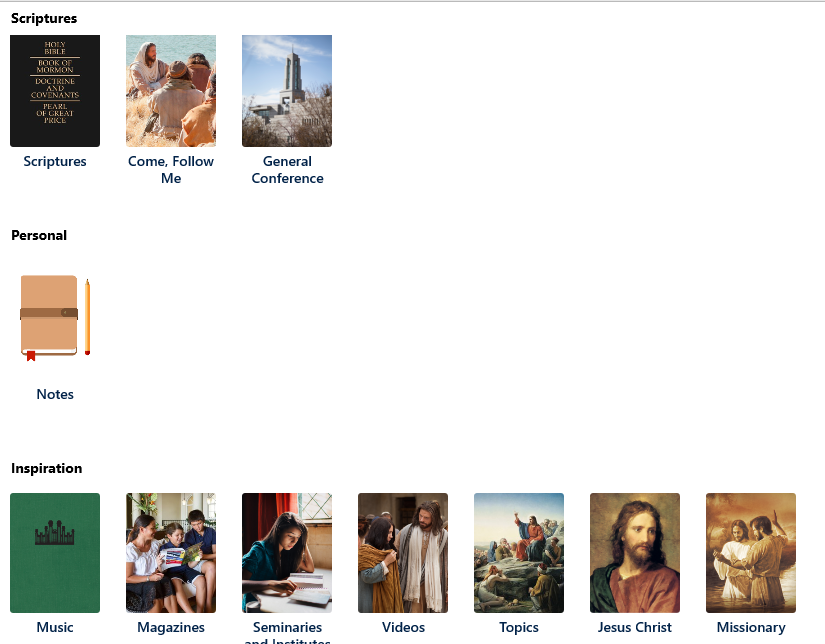
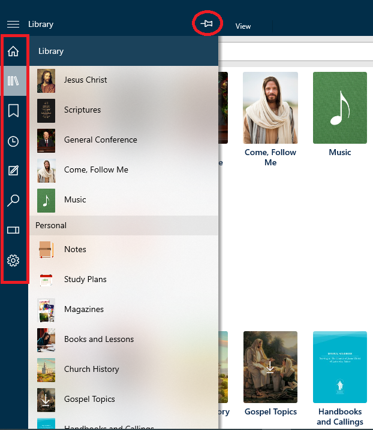
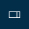
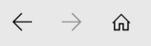
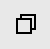
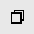

).
).The Home Screen is the starting point for your gospel studies. Below is a picture of the Home Screen. The Home Screen consists of the Library Pane, the Home Pane, the Navigation Bar, the Ribbons, and the Tabs Bar. You can get to the Home Screen at any time by pressing a Home button ().
The Library Pane is on the left side of the content area. It provides easy access to all of the Gospel Library content. Content is divided into collections and the major collections are displayed on the Library Pane.
Collections may be divided into sub-collections. To begin searching for specific content, click on the major collection that it is in. Continue clicking on the desired collections until you reach the desired Content Unit. For example, Scriptures is the major collection, followed by Book of Mormon, 2 Nephi, and then the individual chapters.
You can use quick search to quickly navigate to a hymn by typing its number into the omnibox. You can learn more about search in Chapter 12: How Do I Search?
The Home Pane is on the right of the Library pane. It provides easy access to specific content and can be customized for your use.
To edit the Home Pane, click the Edit Button ( ). The Home Pane Settings menu will open, showing the options available to Personalize your home Pane.
). The Home Pane Settings menu will open, showing the options available to Personalize your home Pane.
Click the on/off toggle button to “on” for each of the resources you want to display on your Home Screen. Clicking the “Expanded View” button on may improve the display of the resource.
Included in the list of Options is “Featured Key Messages and Events.” These are displayed as a moving banner at the top of the Home Pane and may be turned on or off.
The Navigation Bar—the column of icons on the left side of the screen—allows you to reach gospel content quickly and easily. When one of the buttons is pressed, a Navigation Pane appears to the right with a list of items that can be selected.
You can pin a Navigation Pane open by pressing the Pin button ( ) at the top-right of an open pane. The pin keeps the pane open for easy access to the materials. It also changes the reading area so that it is no longer overlapped by the Navigation Pane.
) at the top-right of an open pane. The pin keeps the pane open for easy access to the materials. It also changes the reading area so that it is no longer overlapped by the Navigation Pane.
| Expand/Collapse | The Expand/collapse button will show or hide the most recently used pane from the navigation bar. This button is also commonly called the Hamburger button. | |
|
Home | The Home button takes you back to the main screen in Gospel Library. |
| Library | The Library button gives you quick and easy access to gospel content. From here, you can navigate to your favorite content without needing to return to the home page. | |
| Bookmarks | If you've signed into your LDS Account, the Bookmarks button will display a list of your bookmarks. | |
| History | The History button shows you what gospel content you have visited and keeps track of when you've visited so you can return to it later. | |
| Notes | The Notes button allows you to access your highlights, notes, tags links, notebooks and journal entries. | |
| Search | The Search button allows you access to the Search features and allows you to easily return to search results from your most recent search. | |
 |
References | The References button allows you access to the References pane, which lists references and related content. |
|
Settings | The Settings button allows you access to the Settings pane, which lets you to customize Gospel Library to best fit your needs. |
You can hide the navigation bar by turning on the "Always Hide the Navigation Bar" option found in the Appearance section of the Settings pane. The Expand/Collapse button will then appear beside the Home ribbon and can be used to open the most recent navigation pane and show the navigation bar.
The ribbons at the top of the app are accessed by the four buttons. They provide a quick way for you to navigate and control your experience in Gospel Library for Windows. The Home tab opens a ribbon which provides principle navigation for the application. This section explains the home ribbon.
The other tabs seen above the home ribbon will be discussed in later chapters. The Annotate tab (see Chapter 4 : How Do I Mark Scriptures and Other Document Text?) opens a ribbon which provides annotation features, including highlighting, underlining, notes, tags, links, and more. The View tab (see Chapter 16 : How Do I Customize My Reading Experience?) opens a ribbon that offers a subset of settings related to your reading experience. As the Media tab (see Chapter 15 : How Do I play and Download Audio and Video Media?) opens a media screen, there is no need for a Media ribbon.
The Home Ribbon consists of (1) the forward, back and home buttons, (2) the omnibox and (3) the bookmarks, history, new tab and more buttons.

These arrows allow you to move through recent items in your history. If, for example, you’ve visited a footnote that leads you to a verse in James while reading through 2 Nephi, you can press the Back button to return to 2 Nephi. Pressing the Forward button allows you to return once again to previously visited content after going back.
The omnibox is included in the home ribbon and displays the pathway (breadcrumbs) to the current open content. Using the breadcrumbs you can easily navigate to a different collection or book in a section.

The omni box may also be used as a search box described in Chapter 12: How Do I Search?
The Bookmarks and History buttons serve the same function as their buttons on the navigation bar and are present for convenience, especially for users who have chosen to hide the navigation bar. The More button, represented by an ellipsis ( ), offers a selection of options not found elsewhere in the application, in addition to a few convenient shortcuts. The New tab button () appears on the Home ribbon when you only have one open tab. Once you have opened a second tab, the New tab button will look like a plus sign (
), offers a selection of options not found elsewhere in the application, in addition to a few convenient shortcuts. The New tab button () appears on the Home ribbon when you only have one open tab. Once you have opened a second tab, the New tab button will look like a plus sign ( ) and move to the tabs bar.
) and move to the tabs bar.
By default, the Tabs Bar is visible when more than one tab is open. The Tabs Bar allows you to view, open, close, and manage opened tabs in Gospel Library for Windows. You can learn more about tabs in Chapter 6: How Do I Use Tabs and Windows?

By default, the Tabs Bar is not visible if you only have one tab open. To always show the Tabs Bar, open the Settings pane and change the setting at Appearance>Always Show the Tabs Bar.